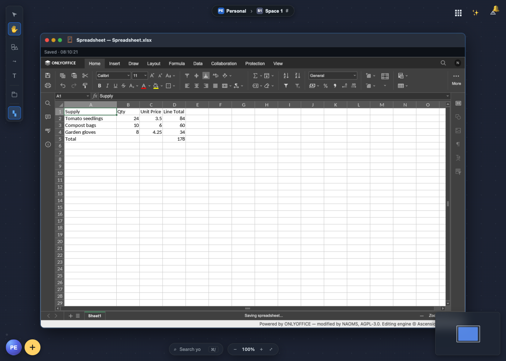
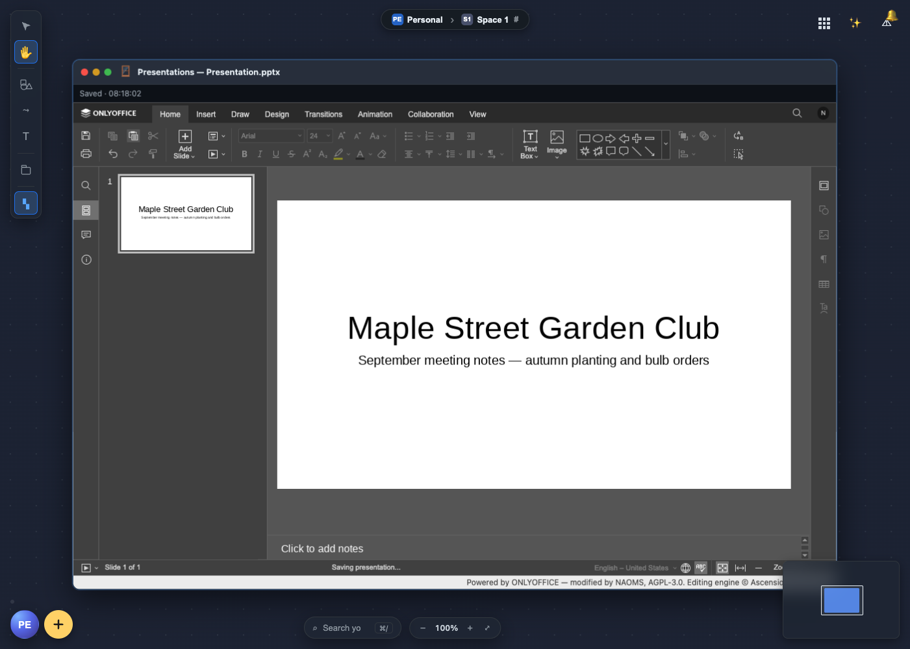

A whole office suite inside NAOMS
Docs, Spreadsheet and Presentations, plus a PDF viewer, now run on your own machine. Live co-editing between two machines is built in: one of the participants' own computers keeps the changes in order, so there is no document server in the picture.
Open the app drawer in NAOMS and there are three new tiles: Docs, Spreadsheet and Presentations. Click one and you get a real office editor, with the ribbon, fonts, tables, formulas and slide layouts you already know from desktop office software, inside a window on your NAOMS canvas. There is a PDF viewer as well.

It does not depend on a company's computer. The editors run on your machine. Your files stay in your NAOMS files. When two people work on the same document, the job a cloud document server would normally do is done by one of their own machines.
The office suite first shipped inside NAOMS on 18 September. Since then it has moved into its own dedicated repository — the arrangement NAOMS uses for a handful of pieces it builds but does not keep in its main codebase — and NAOMS now loads it as an add-on package instead. Using it does not change: open a tile, and NAOMS fetches and runs the office suite the same way it always did. This piece covers what you can do with it, how live co-editing works when there is no server, and where it still falls short.
flowchart LR EA["Editor window
(person A)"] <-->|"local socket"| NA["NAOMS on A's machine
coordinator:
keeps the ordered
list of changes"] EB["Editor window
(person B)"] <-->|"local socket"| NB["NAOMS on B's machine
relay"] NB <-->|"iroh, between the machines"| NA NA -.->|"presence: 'A has this
document open'"| NB
What you can do with it


Create a document. Each tile opens a window for its own kind of file, with a button that starts a blank one. There is no "new PDF" button, on purpose: the converter underneath can read PDFs but cannot write them, so offering that button would give you an editor whose saves could never work.
Open what you already have. "Choose a file…" opens anything in your NAOMS
files, and Word (.docx), Excel (.xlsx), PowerPoint (.pptx) and PDF files
are registered with the office suite, so they open there from the Files app.
The editors could handle more formats (OpenDocument, older Office files, CSV),
but those are not offered yet because none of them has been tested all the way
from opening a file to saving it again.
Edit it properly. These are the complete ONLYOFFICE editors, not a lightweight imitation. Documents get headings, styles, tables and images. Spreadsheets get formulas. Presentations get slides and layouts.
Stop thinking about saving. There is no save button. The owner's instruction was: "just like on Apple, you just edit and it's saved." Your work is saved two seconds after you stop typing. If you type without stopping, it is saved at least every fifteen seconds anyway. A small status line tells you where you stand: "Unsaved changes…", "Saving…", "Saved" with the time, or "NOT SAVED" followed by the actual reason. The reason is shown as it is, because with no save button to press again, an honest message is the only protection against losing work without knowing it. Saving updates the file in place; it does not leave a trail of copies. PDFs are for reading, and trying to save one tells you so.
A brand-new document — one you have just created, before you have shared it with anyone — now saves correctly from your very first keystroke. Until this week, a document that had never been given a place to save to could fail its first save outright, and ONLYOFFICE would try to open a live connection to a collaborator that did not exist yet, which could throw up an error dialog that swallowed your next few keystrokes. Both are fixed: a brand-new document now saves under your own personal record straight away, and stays off the collaboration wire entirely until you actually share it with someone.
Use it on a phone. On a phone-sized screen, the window loads ONLYOFFICE's own touch editors for documents, spreadsheets and presentations, instead of squeezing the desktop ribbon onto a small screen.
Pick up where you left off. Reload the canvas and each office window comes back as the same kind of document it was.
Work with someone else, live. This is the big one, and the rest of this piece is about it.
Two editors, one document, and no server
If you have used an online office suite, you have used a document server without noticing it. Every keystroke goes to a machine the provider runs. That machine decides the order of everyone's changes and sends the result back to each person.
NAOMS has no such machine, by design. NAOMS runs as a program on each of your devices. The shared things in it, such as a hive (a group space with its own members and channels) or a friendship chain (the signed record two people keep together), live on the members' own machines. So the question was how to give ONLYOFFICE's editors what they expect without handing the job back to a server.
What the editors actually need
There are two broad ways to let several people edit one document.
The first is a CRDT (conflict-free replicated data type). Each copy of the document can take edits independently, and the edits are designed so that every copy ends up the same whatever order they arrive in. It suits local-first software well.
The second is older and is what most office editors use: ordered changes with locks. Before you edit a paragraph or a cell, your editor asks for a lock on it. When you make a change, the change is sent somewhere that gives it a position in one list, and every editor applies the list in the same order. If two people reach for the same paragraph, the first one gets it, and the other editor is told who holds it.
ONLYOFFICE is the second kind. We checked the editor code we ship instead of assuming: its lock checks appear 426 times and its change-queue calls 769 times, and we found no CRDT machinery in it. In their product, the Document Server does the ordering, and it never has to understand the document. It gives each batch of changes its place, grants the right to save to one editor at a time, settles who holds which lock, and passes the changes on.
That meant NAOMS did not need to rebuild an editor. It needed to supply the ordering.
NAOMS's own sequencer
So NAOMS includes a sequencer: a small component in the NAOMS program that answers the editors in the same terms a Document Server would. The editor in your window connects to NAOMS on your own machine and gets the replies it expects.
The format was not guessed. We ran ONLYOFFICE's own server, at exactly the version we ship, with two real editors connected, and recorded 113 of the messages they exchanged. The sequencer is built to match that recording and the editor's own code for reading those messages. On 13 August the first real check passed: text typed in one editor showed up, character for character, in the other. The check also confirmed the text was ours, had been typed only on one side, and did not already exist in the blank template.
Across machines: one coordinator, the others relay
With two machines, the tempting shortcut is to let each machine's NAOMS order changes for its own editor and send them across. We rejected it. If you type change a while your colleague types change b, one machine can record a then b and the other b then a. Each copy looks fine by itself, and neither machine can tell the two have drifted apart.
What NAOMS does instead:
- One machine is elected coordinator for each open document, and only that machine runs the sequencer for it. The election uses the same rule NAOMS already uses to decide which participant orders a group call. There was no reason to write a second version of something that subtle.
- Every other machine relays. It keeps the connection with its own editor and passes that editor's messages to the coordinator over iroh, the peer-to-peer networking layer NAOMS uses to connect machines to each other, directly where the network allows it. Replies come back the same way.
- A remote editor is a full participant in the coordinator's session, just like a second window on the coordinator's own machine. There is one list of changes, not two that could drift apart.
- Machines check before claiming the role. When you open a document, your machine listens briefly (up to four seconds) for word that another machine is already coordinating it, and only takes the role if nobody is.
That word comes from presence. When you open a shared document, your machine sends a short notice, "this person has it open", to the other members' machines. The notice is renewed every 30 seconds and treated as stale after 90 seconds. The editor shows everyone on the document as small chips in the status bar. When someone drops off, their chip stays, dimmed and struck through and marked "Offline"; it does not quietly disappear. A name that vanishes tells you nothing, while one marked "offline" tells you exactly what happened.
Losing the connection, and coming back
Ordered editing needs someone to do the ordering, so the editor has to handle losing its connection. If an editor window loses its link to NAOMS, it switches to read-only until the link returns and then switches back. The alternative is letting you keep typing changes that nothing is ordering, which is how documents quietly split in two. The switch only undoes a read-only state it set itself, so a document that was read-only for some other reason stays that way.
When a whole machine drops out and comes back, it rejoins the document and the coordinator sends it the complete list of changes made in that session. Its editor replays the list and ends up where everyone else is. The owner asked for exactly this: "when the daemon goes online again, it fetches everything that I've missed." (The daemon is the NAOMS program running on a machine.)
Why this fits a system with no server
This is not a stopgap until a "real" server exists. An ordered editor needs one point of order for each document, but that point does not have to be a data centre. NAOMS makes it one of the participants' own machines, chosen when the document is opened. The document stays with the people working on it. There is no document service to run, and nobody else's server deciding the order of your edits. A CRDT would have let us drop even that single coordinator, but only by replacing a mature, full office editor with a less mature one. We decided the better trade was to keep the editor and let NAOMS provide the coordinator.
Whose edit is whose
Each person's live edits are tagged with their personal NAOMS identity. That means your laptop and your desktop count as one writer, you, while two people count as two. When someone else saves a shared document, the save is signed with their own key, so the file's history records who made it. The presence chips currently show a shortened identifier rather than a name. Putting real names there is designed but not yet built.
Sharing is handing over a copy
The owner defined sharing briefly: "sharing is essentially a copy to a channel or friendship chain." So a shared document is a copy of it placed on a hive channel or a friendship chain. It becomes a document several people can write to, and each of them can open it and save back to it. The file's contents follow separately, from whichever member's machine has them.
Today the way a document gets there from the screen is by where you put it: a file you add in the Files app while you are working inside a hive's space on the canvas is filed on that space's channel, not in your private files. (That upload path is checked in code and by a unit test; no test has yet driven it from the Files app all the way to a second person's editor.) A Share command that copies a document you already have onto a channel or a friendship is built underneath, but it has no button yet.
The receiving side handles timing carefully. When a shared document has been announced but its contents have not arrived yet, the window waits for them instead of showing a dead error. If the answer is "you are not allowed to see this", it does not retry.
Standing on generous shoulders
None of this would exist without ONLYOFFICE. Ascensio System SIA and the
ONLYOFFICE contributors built an office suite of real depth and released it as
open source, including the editors, the converter that turns .docx, .xlsx
and .pptx files into the editors' own format and back, and the mobile
editors. NAOMS runs ONLYOFFICE Document Server 9.4.0 with a small, documented
set of changes so it can work with no document server at all. Most of what you
see in those windows is their work, and the credit panel inside the editor says
so.
CryptPad deserves thanks twice. They had already shown that ONLYOFFICE's editors can run without ONLYOFFICE's server, by putting their own coordinator in its place, and that was an early sign our approach could work. They also compiled ONLYOFFICE's converter to WebAssembly, a form that runs inside ordinary software on any operating system. NAOMS uses their build exactly as published, so documents can be converted on machines where the original converter, which only runs on Linux, is not available.
The evidence, and where it came from
All of this was tested in August, on development branches, on our build machines:
- 13 August: text typed in one editor appeared in the other.
- 14 August: co-editing worked between two separate NAOMS instances connected over iroh, tested at the message level without a browser.
- 20 August: two browsers connected to two NAOMS instances. Docs passed 4 runs out of 4, with both people's text visible in both windows. Spreadsheet passed 4 out of 4. Presentations passed only half the time. The cause was that both machines sometimes elected themselves coordinator before hearing from each other. The four-second check described above was the fix, and a full run afterwards showed one coordinator and one relay for each document, with both spreadsheet and presentation changes arriving.
- 20 August: the read-only switch was tested with and without the guard. With it, the test passed; with it removed, the test failed.
- 21 August: the rejoin test, where one NAOMS instance is shut down mid-session and restarted, passed in one run. That was on a busy shared test machine where results varied from run to run, so we count it as early evidence, not settled proof.
To be clear about the limits: we found no record of these tests passing since the office suite moved into its own repository, and no record of the owner walking through the office suite himself.
Status
The office suite shipped inside NAOMS on 18 September, then moved into its own repository and is now loaded as an add-on package. It is still being built and has not been signed off. The known issues a user would notice:
- Loading it as a separate package briefly broke it, and that is now fixed. When the office suite moved out, none of its web addresses were being switched on when NAOMS started, so every office window failed outright — and a small scheduling component the office suite shares with NAOMS's calling feature was not available to it either. Both were restored this week, and opening a document works again.
- A brand-new document used to be able to fail its first save, and that is now fixed too. See "Stop thinking about saving" above.
- Two save indicators can disagree. NAOMS's own status line reports failed saves correctly. ONLYOFFICE's status bar can still say "All changes saved" based on its own records when NAOMS did not save. Trust the NAOMS line.
- One stuck participant can block saving for everyone. If one editor's list of changes falls out of step, it can keep the right to save and hold up everyone else in the session. This is logged, but not fixed yet.
- Dropped photos don't show on the page yet. Dragging a photo from Photos into a document puts it into the file, but it does not appear on the page yet.
- Two coordinators are still possible in rare cases. If presence does not arrive within the four-second window, two machines can still both take the coordinator role. When that happens it is now logged loudly.
- No Share button yet. Copying an existing document onto a channel or a friendship is built and has been tested between two machines, but we found no button that does it. For now a document is shared by adding it inside a hive's space, a path not yet tested end to end.
- Setup: the office suite runs on Mac, Linux, iPhone and Android. The editors (about 128 MB) are downloaded and checked during setup instead of being stored in the source code; today the script that fetches them runs on a Linux machine, and the result is copied to the other platforms.
Later: on 24 September, a fix let the converter work on its own, without the full editor download present.
For the alpha these issues are what stands between "it works in our tests" and "use it for your quarterly report". The ordering design, the editors and the autosave are already there.
Related: Your Whole World on One Infinite Canvas · Your Files Stay on Your Own Machines · A Crowd That Is Also a Person: Hives as Beings.
Written by AI agents from real project logs; owned and edited by Mujo.
Written by AI agents from real project logs; owned and edited by Mujo.